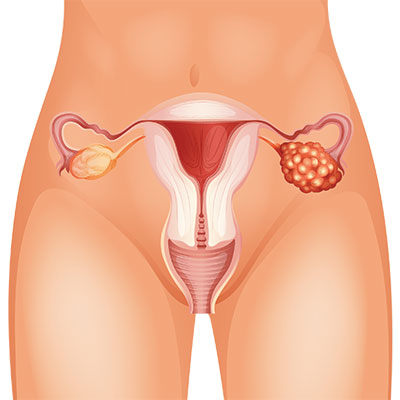
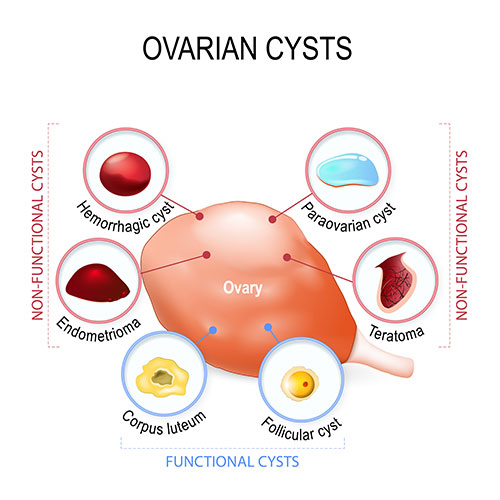
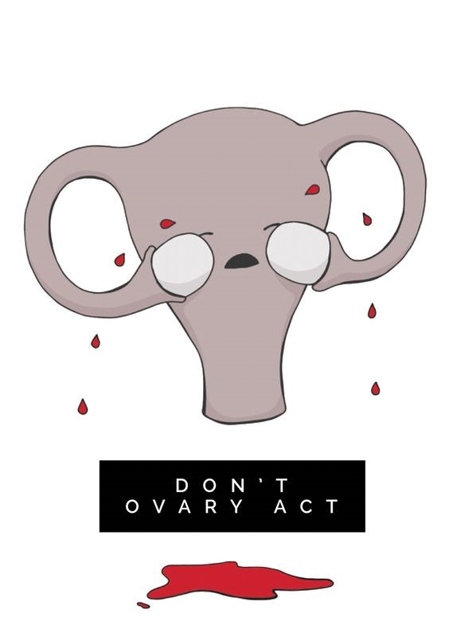

Σεζόν 1 · 10 επεισόδια
1 Κύστες Ωοθηκών – Τι Είναι1 λεπτά · 104 λέξεις

Οι λειτουργικές κύστες των ωοθηκών δεν πρέπει να συγχέονται με άλλα είδη κύστεων που σχετίζονται με ασθένειες. Περιπτώσεις όπως αυτή του συνδρόμου των πολυκυστικών ωοθηκών και του καρκίνου των ωοθηκών, σχετίζονται με την ανάπτυξη κύστεων πάνω στις ωοθηκές.
2 Κύστες Ωοθηκών – Είδη2 λεπτά · 348 λέξεις

Η αφαίρεση ωοθηκικών κύστεων αποτέλεσε παραδοσιακά τον πρώτο χώρο εφαρμογής της ενδοσκόπησης στην γυναικολογία και εξακολουθεί και υπηρετείται δυναμικά τόσο από την λαπαροσκοπική όσο και την ρομποτική χειρουργική.
Οι κύστεις των ωοθηκών κατηγοριοποιούνται σε:
Λειτουργικές, Οργανικές
Οι πρώτες οφείλονται κυρίως σε ορμονικούς-ενδοκρινικούς λόγους και η θεραπεία τους γίνεται με ορμονικά σκευάσματα όπως τα αντισυλληπτικά . Αντίθετα στην επόμενη κατηγορία απαιτείται χειρουργική θεραπεία και η λεπτομέρεια και η μεγέθυνση της λαρασκόπησης θεωρείται απαραίτητη όχι μόνο για την αφαίρεση της κύστης αλλά και για την ανατομική παρασκευή και διατήρηση του υπολοίπου παρεγχύματος της υγιούς ωοθήκης.
Χρονολογικά οι ωοθηκικές κύστεις που εμφανίζονται στην αρχή της εμμήνου ρήσης μια γυναίκας είτε κοντά στην εμμηνόπαυση και είναι ορώδεις είναι συχνότατα ορμονικής προέλευσης , συνεπώς καλοήθεις , και η ορμονική θεραπεία είναι σχεδόν πάντα αποτελεσματική για την αντιμετώπιση τους.
Όταν αυτές φέρουν προσεκβολές, δηλαδή ανοιχτόχρωμα στοιχεία στο σκούρο τους παρέγχυμα όπως αυτό φαίνεται στην απεικόνιση τους στον διακολπικό υπέρηχο, συχνά παρουσιάζουν ‘ύποπτα κύτταρα’ στην ιστολογική εξέταση και χρήσιμο είναι να αντιμετωπίζονται με χειρουργική θεραπεία και βιοψία.
Ένα πρόσθετο μέτρο διερεύνησης προεγχειρητικά μιας κύστης είναι το έγχρωμο κολπικό Doppler που αναδεικνύει , ανάλογα με τις αντιστάσεις που φέρουν τα ωοθηκικά αγγεία , πιθανές κακοήθειες και διευκολύνει τις κλινικές επιλογές του θεράποντος.
Επιγραμματικά οι συχνότεροι τύποι καλοηθών ωοθηκικών κύστεων είναι:
- Σοκολατοειδής
- Δερμοειδής,
- Κυσταδενώματα, (ορώδη-βλεννώδη)
- Όγκοι ωοθηκών οριακής κακοήθειας, (borderline tumors).
Σοκολατοειδής Κύστη
Αποτελεί μορφή ενδομητρίωσης της πυέλου, φέρει κάψα που περιέχει παλαιό αιματηρό περιεχόμενο και είναι μείζουσης σημασίας η ορθή ανατομική παρασκευή της κύστης, ώστε να προστατευθεί η υπόλοιπη υγιής ωοθήκη προς όφελος της γονιμότητας. Πρέπει βέβαια εξάλλου να αφαιρεθεί ολοκληρωτικά τοι τοίχωμα προς αποφυγή υποτροπής της νόσου.
Δερμοειδής ή ώριμο τεράτωμα της ωοθήκης
Πρόκειται περί κύστεων που φέρουν φυλογενετικά πολλά από τα αρχέγονα εμβρυϊκά στοιχεία του οργανισμού ( όπως τρίχες, λίπος, οστά , τμήματα θυροειδούς κ.τ.λ.). Χρήζει προσοχής κατά τις τεχνικές ενδοσκοπικής αφαίρεσης ώστε να μην διαφύγει στον περιβάλλοντα χώρο της κοιλίας περιεχόμενο της κύστης , που έχει ισχυρό χημικό ερεθιστικό χαρακτήρα. Κάποιες φορές βλάπτεται ολόκληρο το ωοθηκικό παρέγχυμα και έτσι μπορεί να καταλήξουμε στην αφαίρεσή ακόμη και ολόκληρης της ωοθήκης.
ΚΛΕΙΣΤΕ ΤΩΡΑ ΡΑΝΤΕΒΟΥ!3 Κύστη στην ωοθήκη: Συμπτώματα1 λεπτά · 85 λέξεις
Ορισμένες μικρότερες κύστες δεν προκαλούν συμπτώματα. Μεγαλύτερες κύστες μπορεί να προκαλέσουν τα ακόλουθα συμπτώματα:
- Μια αλλαγή στην κανονική έμμηνο ρύση
- Πυελικό πόνο ή αμβλύ πόνο στην πλάτη
- Ένα αίσθημα πληρότητας (φούσκωμα) στο κάτω μέρος της κοιλιάς
- Πόνο κατά τη συνουσία
- Επώδυνες περιόδους
Μερικά παρατεταμένα συμπτώματα μπορεί να σχετίζονται με μια κατάσταση που ονομάζεται σύνδρομο πολυκυστικών ωοθηκών, μια ορμονική ανισορροπία που προκαλεί ακανόνιστες περιόδους και άλλα ορμονικά προβλήματα, συμπεριλαμβανομένης της παχυσαρκίας και της στειρότητας. Ένα ακόμη σύμπτωμα του συνδρόμου πολυκυστικών ωοθηκών περιλαμβάνει την αυξημένη τριχοφυΐα σώματος.
4 Κύστες Ωοθηκών – Αίτια1 λεπτά · 23 λέξεις
Η ακριβής αιτία των κύστεων των ωοθηκών δεν είναι γνωστή, αλλά τείνουν να σχηματίζονται όταν η ωοθήκη παράγει μεγάλη ποσότητα της οιστρογόνου ορμόνης.
5 Κύστες Ωοθηκών – Διάγνωση1 λεπτά · 163 λέξεις

- Μια γυναικολογική εξέταση – Κατά τη διάρκεια της εξέτασης, ο γιατρός χρησιμοποιεί ένα εργαλείο για τη διεύρυνση του κόλπου, η οποία επιτρέπει στον γιατρό να εξετάσει τον κόλπο, τον τράχηλο και τη μήτρα. Επίσης ο γιατρός ψηλαφίζει, τα αναπαραγωγικά όργανα για τυχόν εξογκώματα ή αλλαγές.
- Οι εξετάσεις αίματος – Χρησιμοποιούνται για τη μέτρηση των επιπέδων ορισμένων ορμονών στο αίμα.
- Υπερηχογράφημα – Χρησιμοποιούνται τα ηχητικά κύματα για την απεικόνιση των εσωτερικών οργάνων του σώματος. Μπορεί να χρησιμοποιηθεί και για την ανίχνευση κύστεων στις ωοθήκες.
- Λαπαροσκόπηση – Αυτή είναι μια επέμβαση, που γίνεται στο χειρουργείο, κατά την οποία ο γιατρός εισάγει μια μικρή συσκευή μέσω μιας τομής στην κοιλιακή χώρα. Έτσι παρατηρεί τα αναπαραγωγικά όργανα και την πυελική κοιλότητα, με τη χρήση της συσκευής. Κατά τη διάρκεια μιας λαπαροσκόπησης, μπορούν να αφαιρεθούν μικρές κύστες ή δείγματα ιστών για περαιτέρω εξέταση. Αυτή η διαδικασία ονομάζεται λαπαροσκοπική αφαίρεση.
6 Κύστες Ωοθηκών – Θεραπεία1 λεπτά · 78 λέξεις
Οι λειτουργικές κύστες των ωοθηκών συνήθως υποχωρούν χωρίς κάποια θεραπεία. Ο γιατρός σας μπορεί να σας χορηγήσει φάρμακα που περιέχουν ορμόνες για να σταματήσει την ωορρηξία. Αν δεν έχετε ωορρηξία, δεν θα σχηματίσετε λειτουργικές κύστες. Σε ορισμένες περιπτώσεις και ανάλογα με το μέγεθος, η χειρουργική επέμβαση μπορεί να είναι απαραίτητη για να αφαιρέσετε μια κύστη στην ωοθήκη από 3 εκατοστά, 4 εκατοστά, 5 εκατοστά, 6 εκατοστά, 7 εκατοστά έως και 8 εκατοστά. Ο γιατρός σας θα σας συμβουλεύσει.
7 Τύποι χειρουργικών επεμβάσεων1 λεπτά · 144 λέξεις
Το είδος της χειρουργικής επέμβασης που χρησιμοποιείται εξαρτάται από το μέγεθος της κύστης και πώς εμφανίζεται στο υπερηχογράφημα. Οι διάφορες επεμβάσεις που χρησιμοποιούνται περιλαμβάνουν:
Λαπαροσκόπηση
Αυτή είναι μια διαδικασία κατά την οποία εισάγει ο γιατρός μια μικρή συσκευή μέσα από μια τομή στην κοιλιακή χώρα. Αυτός ή αυτή απόψεις των αναπαραγωγικών οργάνων και της πυελικής κοιλότητας, χρησιμοποιώντας τη συσκευή. Αν η κύστη είναι μικρή, ο γιατρός μπορεί να την αφαιρέσει μέσω μικροσκοπικών τομών στην ηβική γραμμή. Προσφέρει πολλά πλεονεκτήματα στην γυναίκα, όπως μικρή νοσηλεία -άρα και μειωμένο κόστος νοσηλείας- και σύντομη ανάρρωση.
Λαπαροτομία
Αυτή η επέμβαση χρησιμοποιεί μια μεγαλύτερη τομή για την αφαίρεση της κύστης. Η κύστη θα ελεγχθεί για καρκίνο. Αν υπάρχει καρκίνος, ο γιατρός μπορεί να χρειαστεί να αφαιρέσει τη μία ή και τις δύο ωοθήκες, τη μήτρα, μια πτυχή του λιπώδους ιστού και κάποιους λεμφαδένες.
Βρείτε λύση στο πρόβλημα σας!8 Κύστες Ωοθηκών – Επιπλοκές1 λεπτά · 13 λέξεις
Αν μια κύστη σπάσει, μπορεί να προκαλέσει έντονο πόνο και πρήξιμο στην κοιλιά.
9 Κύστες Ωοθηκών – Πρόληψη1 λεπτά · 65 λέξεις
Η λήψη φαρμάκων που περιέχουν ορμόνες (όπως τα χάπια ελέγχου των γεννήσεων) θα σταματήσει την ωορρηξία. Ωστόσο, πολλές γυναίκες που λαμβάνουν μικρή δόση αντισυλληπτικών από το στόμα μπορεί ακόμη να έχουν ωορρηξία. Παρά το γεγονός ότι δεν υπάρχει καμία μελέτη που να δείχνει ότι η λήψη αντισυλληπτικών χαπιών από το στόμα μειώνει το σχηματισμό της κύστεων ωοθηκών, πολλοί γιατροί εξακολουθούν να συμμερίζονται αυτή την άποψη.
10 Κύστη Στην Ωοθήκη & Εγκυμοσύνη1 λεπτά · 79 λέξεις
Οι περισσότερες γυναίκες που παρουσιάζουν κύστη στην εγκυμοσύνη δεν παρουσιάζουν συμπτώματα και το μαθαίνουν σε έναν τυπικό υπερηχογραφικό έλεγχο της κύησης. Συνίσταται αρχικά μία συντηρητική αντιμετώπιση με παρακολούθηση, αφού σε μεγάλο ποσοστό η κύστη θα απορροφηθεί από μόνη της και θα μειωθεί και το μέγεθός της. Αν επιμένει μία κύστη μεγάλου μεγέθους και αυξάνεται κατά το πρώτο τρίμηνο της εγκυμοσύνης, πιθανότατα να πρέπει να αντιμετωπιστούν με τον τρόπο που θα συστήσει ο γυναικολόγος, καθώς αυξάνεται ο κίνδυνος επιπλοκών.
- Συγγραφέας
- Κωνσταντίνος Μυρίλλας
- Κατηγορία
- Γυναικολογία
- Δημοσίευση
- 10 Φεβρουαρίου 2022
- Ενημέρωση
- 3 Νοεμβρίου 2023
- Ανάγνωση
- 6 λεπτά, 1165 λέξεις
- Γλώσσα
- Ελληνικά
Μιλήστε με τον γιατρό
Μια εκτίμηση δεν δεσμεύει σε τίποτα. Ρωτήστε ό,τι σας απασχολεί.